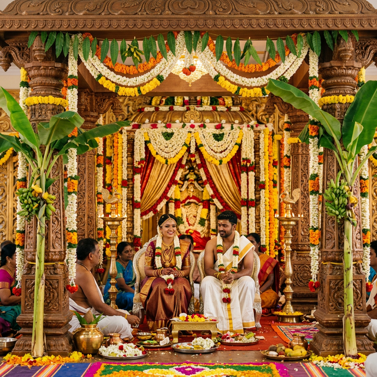
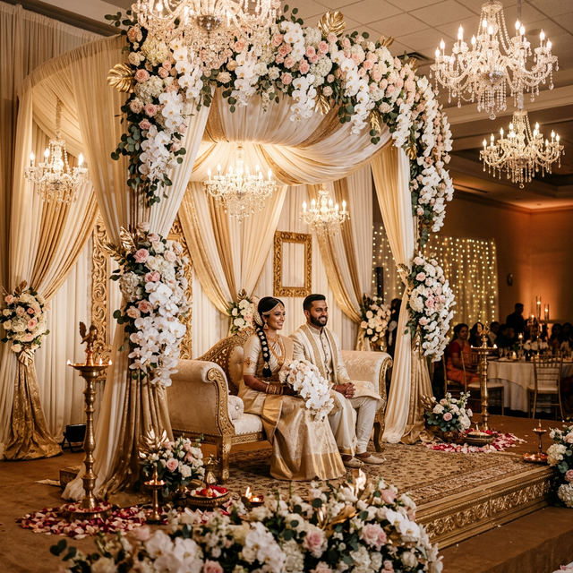
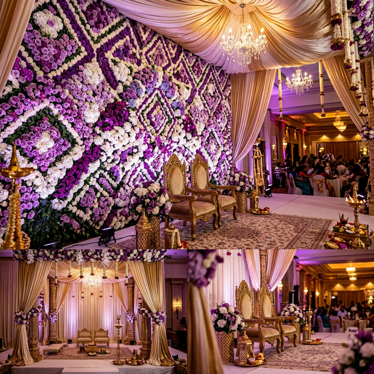
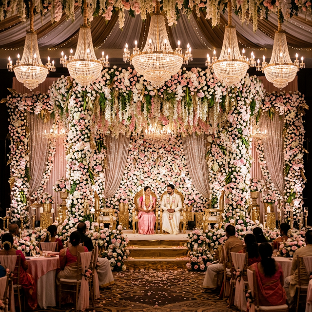

Authentic traditional wedding canopy designs by VKS Decorations in Tiruchirappalli
The manavarai, or wedding mandapam, holds a special place in the heart of every Tamil wedding. It is the sacred canopy under which two families unite, where ancient Vedic customs come alive, and where bonds are sealed for a lifetime. At VKS Decorations, we bring deep reverence and artistic excellence to every manavarai we create in Trichy and across Tamil Nadu.
Our team of experienced artisans understands the spiritual significance of the manavarai and ensures every element — from the placement of banana stems to the draping of mango leaves — adheres to traditional customs while elevating the visual grandeur to match modern expectations.



We offer manavarai designs that honour tradition while embracing elegance:
Every manavarai by VKS Decorations includes the essential sacred elements that are integral to Tamil Hindu wedding ceremonies:
Our deep understanding of South Indian wedding traditions, combined with our premium floral artistry, makes us the top choice for manavarai decoration in Tiruchirappalli. We work with temple priests and pandits to ensure every element is placed correctly as per vedic customs, while our design team ensures the overall aesthetic is nothing short of breathtaking.
A manavarai is the sacred wedding canopy or mandapam under which the traditional Tamil Hindu wedding ceremony takes place. It is decorated with banana stems, mango leaves, flowers, and sacred elements as per customs.
Manavarai decoration in Trichy starts from Rs 30,000 for basic traditional setups and can go up to Rs 2,00,000+ for elaborate temple-themed designs with imported flowers and premium elements.
Absolutely. VKS Decorations offers fully customised manavarai designs that can match your overall wedding colour theme while maintaining the sacred traditional elements essential for the ceremony.
Secure your traditional manavarai decoration with VKS Decorations in Trichy.